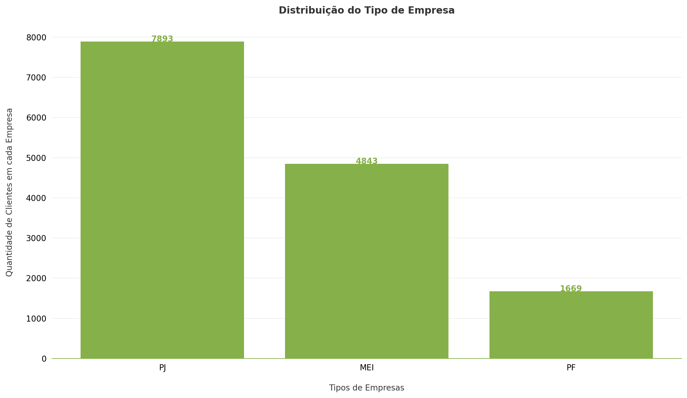
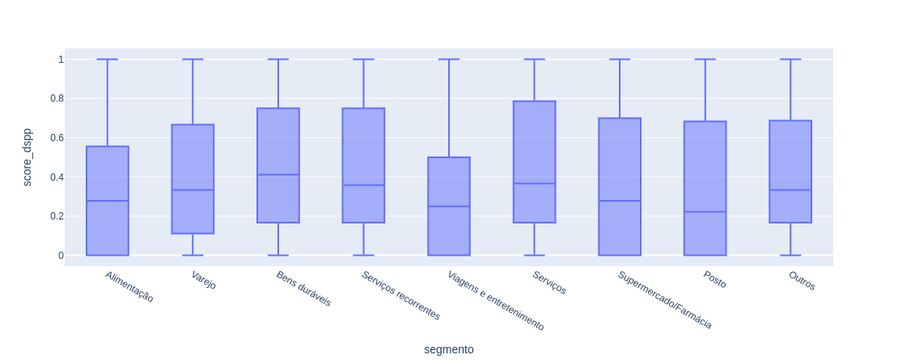

Data Challenge Stone 2022

O objetivo dessa página é servir de documnetação de todo o processo de análise realizado na base fornecida pela Stone. Aqui será registrado o Framework de Avaliação.
Para mais informações sobre o desafio acesse: LINK.
Framework de Avaliação
A minha análise sobre os dados da Stone segue duas grandes etapas. Primeiramente foi realizado uma análise mais descritiva dos dados, com o objetivo de conhecer detalhes dos dados e possíveis inconsistências. E posteriormente, uma análise mais direcionada para resolução do problema.
Nas validações iniciais será registrado a etapa descritiva, e em fluxo de etapas realizadas será registrado os passos para chegar na melhor curva de acionamento do cliente.
Validações iniciais
Como dito anteriormente, nesta etapa foi realizada uma análise descritiva das bases que estão disponíveis para trabalhar. Nesse caso nós tempos:
portfolio_clientesportfolio_comunicadosportfolio_geralportfolio_tpv
# libs
import pandas as pd
import numpy as np
import matplotlib.pyplot as plt
from src.make_plot import plot
# matplotlib configs
plt.rcParams["figure.figsize"] = (12, 7)
plt.rcParams["figure.dpi"] = 200
# data
clients = pd.read_csv("data/portfolio_clientes.csv")
tpv = pd.read_csv("data/portfolio_tpv.csv")
comunicados = pd.read_csv("data/portfolio_comunicados.csv")
geral = pd.read_csv("data/portfolio_geral.csv")
1. portfolio_clientes
Aqui encontramos todas as informações relacionadas aos dados cadastrais dos clientes que contratam empréstimos, assim como dados geográficos e segmentos do negócio.
A base deveria possuir como registro único, a coluna de nr_documento, porém foi visto que existem registros duplicados. Devido a essa inconsistência, os contratos relacionadas aos nr_documento duplicados não serão considerados.
Vamos então calcular o total de clientes registrados:
# total de clientes
clients_wo_duplicate = clients.drop_duplicates(["nr_documento"])
clients_wo_duplicate.shape
(14265, 6)
Dessa forma, possuímos um total de 14.265 clientes na base. Esse valor não reflete diretamente na quantidade de contrato já que cada cliente pode possuir mais de um contrato. Apenas a nível já realizarmos um comparativo, puxamos também o número de contratos registrados na base:
# total de clientes
geral.drop_duplicates("contrato_id").shape
(14756, 22)
Trazendo a informação da tabela portfolio_geral vemos que existe um número levemente maior, 14.756 contratos, registrados.
Essa base é composta de mais algumas variáveis categóricas, e saber como as mesmas estão distribuídas pode nos trazer bons insights para análises futuras mais complexas.
Distribuição de Tipo da Empresa
# getthering the data to plot
counts = clients.value_counts("tipo_empresa").reset_index()
y = counts[0].values
x = counts["tipo_empresa"].values
# this function is part of the code on src directory
plot.make_beautiful_bar_plots(
x,
y,
"Distribuição do Tipo de Empresa",
"Tipos de Empresas",
"Quantidade de Clientes em cada Empresa",
False
)

A maioria dos clientes estão cadastrados como Pessoa Jurídica, e bem pouco como Pessoal Física.
Distribuição dos Estados
counts = clients.value_counts("estado").reset_index()
y = counts[0].values
x = counts["estado"].values
# this function is part of the code on src directory
plot.make_beautiful_bar_plots(
x,
y,
"Distribuição de quantidade de clientes em cada Estado.",
"Estados brasileiros",
"Quantidade de clientes em cada Estado",
False
)

Aqui vemos uma grande maioria dos clientes pertecentes ao Estado de São Paulo, seguido pelo Rio de Janeiro. A diferença dentre os outros Estados vai decaindo gradualmente.
Distribuição dos Segmentos e Subsegmentos
counts = clients.value_counts("segmento").reset_index()
y = counts[0].values
x = counts["segmento"].values
# this function is part of the code on src directory
plot.make_beautiful_bar_plots(
x,
y,
"Distribuição de quantidade de clientes em cada segmento.",
"Segmentos",
"Quantidade de clientes em cada segmento",
True
)

Quando olhamos para os segmentos, é possível ver uma predominância do setor de Alimentação, seguido de Verejo, Bens Duráveis, Serviços e Supermercado/Farmácia, com uma minoria em outras 4 categorias.
counts = clients.value_counts("subsegmento").reset_index()
y = counts[0].values
x = counts["subsegmento"].values
# this function is part of the code on src directory
plot.make_beautiful_bar_plots(
x,
y,
"Distribuição de quantidade de clientes em cada subsegmento.",
"Subsegmentos",
"Quantidade de clientes em cada subsegmento",
True
)

Já nos Subsegmentos, temos duas grandes representatividades, Alimentação Rápida e Lojas Diversas. De Outros em diante, a frequência de clientes vai caindo gradualmente.
Um ponto interessante a se observar é que a maior quantidade de clientes está relacionada a Alimentação, seja diretamente, como indiretamente dentro dos top 5, como: Bares e Restaurantes e Supermercados.
Interessante a se notar também é que temos a presença de um subsegmento chamado None como uma string válida, quando na verdade categoriza um missing value e não um subsegmento de fato.
2. portfolio_tpv
Essa tabela trás toda a informação de Total Paid Value que representa o valor transacionado no dia por cada um dos clientes pela maquininha Stone.
Aqui buscou-se também pela contagem de quantos nr_documento existem na tabela, chegando no valor de 14.259 clientes.
tpv.drop_duplicates("nr_documento").shape
(14259, 4)
Veja que aqui nós temos uma divergência em relação à quantidade de nr_documento presente na tabela portfolio_geral. Um total de 6 clientes não possuem registro de TPV, porém, quando analisados na portfolio_geral vemos que os mesmos possuem valor de pagamento realizado, caracterizados pela presença de média.
nr_documento_tpv = tpv.drop_duplicates("nr_documento")["nr_documento"].to_list()
geral_for_not_tpv = geral[~geral["nr_documento"].isin(nr_documento_tpv)]
geral_for_not_tpv[["vlr_desembolsado", "vlr_pgto_realizado"]].describe()
| stats | vlr_desembolsado | vlr_pgto_realizado |
|---|---|---|
| count | 3938.00 | 3938.00 |
| mean | 11854.92 | 11.86 |
| std | 7246.29 | 176.45 |
| min | 384.75 | 0.00 |
| 25% | 3078.00 | 0.00 |
| 50% | 17100.00 | 0.00 |
| 75% | 17100.00 | 0.00 |
| max | 20520.00 | 5969.64 |
Olhando um pouco mais no detalhe, é possível ver que alguns dos clientes de fato não tiveram nenhum pagamento realizado, o que justifica o mesmo não possuir registro na tabela portfolio_tpv.
geral_for_not_tpv.groupby(["nr_documento"])["vlr_pgto_realizado"].agg(["mean"])
| nr_documento | mean |
|---|---|
| 0a6b34a6b108015777d83b1023d43342 | 23.359794 |
| 1eb088b95b56970c880030922dce1c85 | 17.530547 |
| 69116fe5b82f759fd2f295f1daa92ecf | 0.000000 |
| 6ef839f0201c6295072e45a95eb34466 | 10.529941 |
| e6addfdeb74a038bb5f7149c7cfb1290 | 17.557847 |
| ec55907309c0e6195675cb786f7d7242 | 0.000000 |
Analisar o TPV como um todo não é muito conclusivo, temos valores muito dispersos de valor transacionado diariamente, assim como de máximos e mínimos.
tpv[["qtd_transacoes", "vlr_tpv"]].describe().apply(lambda s: s.apply("{0:.5f}".format))
| stats | dt_transacao | qtd_transacoes | vlr_tpv |
|---|---|---|---|
| count | 4408597.00 | 4408597.00 | 4408597.00 |
| mean | 20204274.56 | 15.91 | 887.50 |
| std | 4656.32 | 26.15 | 1664.21 |
| min | 20200101.00 | -2.00 | -125000.00 |
| 25% | 20200624.00 | 3.00 | 175.00 |
| 50% | 20201030.00 | 7.00 | 430.00 |
| 75% | 20210226.00 | 18.00 | 978.00 |
| max | 20210630.00 | 1245.00 | 176880.93 |
Portanto, como temos os dados cadastrais dos clientes, é mais interessante levar isso em consideração na hora fazer a análise.
Vamos primeiramente juntar as bases:
tpv_merged = tpv.merge(right=clients, on="nr_documento", how="inner")
Analisando primeiramente o TPV para segmento e subsegmento, temos:
tpv_sum_segment = tpv_merged.groupby(["segmento"])["vlr_tpv"].agg(["sum"]).reset_index()
tpv_sum_segment["prop"] = tpv_sum_segment["sum"] / tpv_sum_segment["sum"].sum()
tpv_sum_subsegment = tpv_merged.groupby(["subsegmento"])["vlr_tpv"].agg(["sum"]).reset_index()
tpv_sum_subsegment["prop"] = tpv_sum_subsegment["sum"] / tpv_sum_subsegment["sum"].sum()
tpv_sum_segment.sort_values("prop", ascending=False)
| segmento | sum | prop |
|---|---|---|
| Alimentação | 1.473060e+09 | 0.372553 |
| Bens duráveis | 7.342777e+08 | 0.185707 |
| Varejo | 5.917481e+08 | 0.149660 |
| Supermercado/Farmácia | 4.799287e+08 | 0.121379 |
| Serviços | 4.409396e+08 | 0.111518 |
| Posto | 8.120651e+07 | 0.020538 |
| Serviços recorrentes | 6.621661e+07 | 0.016747 |
| Viagens e entretenimento | 4.964331e+07 | 0.012555 |
| Outros | 3.694166e+07 | 0.009343 |
Aqui vemos que a ordem muda um pouco, onde Varejo perde posição para Bens Duráveis e Serviços para Supermercado/Farmácia
tpv_sum_subsegment.sort_values("prop", ascending=False)
| subsegmento | sum | prop |
|---|---|---|
| Alimentação Rápida | 7.782735e+08 | 0.196834 |
| Lojas Diversas | 6.846034e+08 | 0.173144 |
| Supermercados | 4.372940e+08 | 0.110596 |
| Bares e Restaurantes | 3.662225e+08 | 0.092622 |
| Outros | 3.469090e+08 | 0.087737 |
| Automotivo | 2.711954e+08 | 0.068588 |
| Saúde | 2.537558e+08 | 0.064178 |
| Material de Construção | 2.178250e+08 | 0.055090 |
| Vestuário | 2.070685e+08 | 0.052370 |
| Atacadistas Gerais | 1.396476e+08 | 0.035318 |
| Postos de Gasolina | 8.112604e+07 | 0.020518 |
| Educação | 4.507371e+07 | 0.011400 |
| None | 4.076986e+07 | 0.010311 |
| Lazer & Turismo | 3.600002e+07 | 0.009105 |
| Atacadista de Alimento | 2.495160e+07 | 0.006311 |
| Academias | 2.324615e+07 | 0.005879 |
Em relação ao subsegmento, vemos que houve uma troca de posição entre Supermercados e Outros.
Com essas duas bases podemos buscar por sasonalidade nos dados e melhor compreender como cada negócio oscila ao passar do tempo. Para isso, iremos utilizar uma visão de heatmap variando na horizontal o meses do ano, e na vertical todos os nossos Estados, e o valor mapeado no heatmap é o somatório do TPV naquele específico grupo.
Vamos criar as variáveis temporais que iremos precisar e agroupar os dados que serão utilizados para o heatmap:
tpv_merged["dt_transacao"] = pd.to_datetime(tpv_merged["dt_transacao"], format="%Y%m%d")
tpv_merged["month"] = tpv_merged["dt_transacao"].dt.month
tpv_merged["year"] = tpv_merged["dt_transacao"].dt.year
# grouping
df = (
tpv_merged.groupby(["segmento", "estado", "year", "month"])["vlr_tpv"]
.agg(["sum"])
.reset_index()
)
# labels for the plot
segmentos = list(df["segmento"].unique())
monhts = [1, 2, 3, 4, 5, 6, 7, 8, 9, 10, 11, 12]
# this code will generate all heatmaps
for segmento in segmentos:
df_segmento = df[(df["year"] == 2020) & (df["segmento"] == segmento)]
estados = list(df_segmento["estado"].unique())
df_heatmap = df_segmento.drop(["segmento"], axis=1).pivot_table(
values="sum", index=["estado"], columns=["month"]
)
fig, ax = plt.subplots()
im, cbar = plot.heatmap(df_heatmap, estados, monhts, ax=ax,
cmap="YlGn", cbarlabel="Total TPV")
# Number of accent colors in the color scheme
plt.title(segmento)
fig.tight_layout()
plt.show()
Como temos diferentes tipos de segmentos, achei mais prudente trazer apenas os Top 3 segmentos de maior TPV para interpretarmos os heatmaps.


O que vemos aqui é que o valor do total de TPV transacionado ao longo do ano de 2020 foram bem semelhantes, com predomínio de São Paulo e Rio de Janeiro (por serem os Estados com mais clientes) e a predominância também do período do segundo trimestre ter sido um período de baixa e que provavelmente deve ter impactado o valor pago nas maquininhas.
O Subsegmento também demonstrou comportamento semelhante ao considerar os Top 3 pelo valor do TPV. A única diferença é que acabamos tendo uma variabilidade maior entre os Estados e ao longo do ano para subsegmentos menores, como Academia e Atacadista de Alimento.

Acredito que tal comportamento deveria ser levado em consideração ao estabelecer uma régua de acionamento. Pois até mesmo, as cidades dentro de Estados maiores, como São Paulo e Rio de Janeiro também podem apresentar realidades diferentes por Segmentos e Subsegmentos.
3. portfolio_comunicados
Essa tabela possui todo o dado de quem foi acionado no seu histórico de empréstimo de linha de crédito. Ao longo desse período, 403.704 acionamentos foram realizados, onde 47.35% sofreram algum problema e acabaram por não serem entregues, 34% foram de fato entregues, 17.6 foram lidas e 0.08 foram respondidas.
comunicados.value_counts("status", normalize=True)
Também observou-se que os acionamentos são realizados por dois canais, mensagens diretas e email. Porém, ao analisar os subtotais dentro de cada status, vemos que não existe preferência entre os tipos canais utilizados
comunicados.value_counts(["status", "tipo_acao"], normalize=True).reset_index()
| status | tipo_acao | prop |
|---|---|---|
| NAO ENTREGUE | HSM | 0.236836 |
| NAO ENTREGUE | 0.236754 | |
| ENTREGUE | HSM | 0.171046 |
| ENTREGUE | 0.170637 | |
| LIDO | HSM | 0.088706 |
| LIDO | 0.088091 | |
| RESPONDIDO | 0.004518 | |
| RESPONDIDO | HSM | 0.003413 |
Todos esses acionamentos foram realizados para um total de 12.202 contratos, o que representa aproximadamente 83% da base. Um número bastante alto de clientes que apresentaram algum tipo de inadiplência.
E por fim, pelo gráfico abaixo, podemos ver que 52% das campanhas realizadas foram de observação, seguido de parcelamento e boleto quitado.
counts = comunicados.value_counts("acao").reset_index()
y = counts[0].values
x = counts["acao"].values
plot.make_beautiful_bar_plots(
x,
y,
"Distribuição do Tipo de Ação",
"Tipos de Ações",
"Quantidade de Ações realizadas",
False
)
4. portfolio_geral
Essa é a maior tabela que temos e a mesma tem todo o histórico de cada um dos mais de 12k de contratos registrados. Com essa tabela farei algumas sumarizações e criação de métricas envolvendo o dsp (Dias Corridos sem Pagamento) e o dspp (Dias Corridos sem Pagamento do Principal), que serão descritas na próxima do framework de avaliação.
Essa tabela, em conjunto com dados de todas as outras, irá nos auxiliar a responder o nosso problema principal: Qual é a quantidade ideal de vezes que acionamos um cliente?.
Fluxo de etapas realizadas
Tudo que foi feito até o momento pode ser encontrado no notebook describe.ipynb. Daqui pra frente iremos consumir dos notebooks final_composition.ipynb e analysis.ipynb. Onde o primeiro é o responsável por juntar as tabelas e o segundo possui o desenrolar da análise.
Como output, o notebook final_composition.ipynb irá nos fornecer um dataset que permitirá uma análise mais robusta e a entender a melhor curva de acionamento ao cliente.
1. Merge e Criação de Features
Primeiramente, vamos precisar trazer todos as nossas tabelas e as libs que serão utilizadas.
import pandas as pd
from src.feature_engineering import features
import numpy as np
clients = pd.read_csv("data/portfolio_clientes.csv")
tpv = pd.read_csv("data/portfolio_tpv.csv")
comunicados = pd.read_csv("data/portfolio_comunicados.csv")
geral = pd.read_csv("data/portfolio_geral.csv")
Aqui vamos utilizar um módulo de feature engineering que criei para nos auxiliar na criação das features de uma forma mais modular e clean. Detalhes sobre essas etapas específicas de feature engineering vão ser retratadas em uma página bônus da documentação.
Geral + Comunicados
Como visto anteriormente, nem todos os clientes receberam acionamento, por isso, vamos precisar filtrar a base para contemplar apenas os casos que possuem acionamento.
# contratos únicos na tabela de comunicados
unique_contratos = comunicados["contrato_id"].unique()
# filtrando por esses contratos
geral_comunicados = geral[geral["contrato_id"].isin(unique_contratos)]
# como cada contrato possui mais de um acionamento, para evitar duplicidades
# vamos agregar em uma lista os duplicados.
comunicados_grouped = (
comunicados.groupby(["contrato_id", "dt_ref_portfolio", "data_acao"])[
["tipo_acao", "status", "acao"]
]
.agg(list)
.reset_index()
)
geral_comunicados_grouped = geral_comunicados.merge(
right=comunicados_grouped, how="left", on=["contrato_id", "dt_ref_portfolio"]
)
Veja que estamos utilizando um left-join aqui por que a tabela portfolio_geral possui valores diários, e nem todos os dias ocorreram acionamentos, porém, ter essa informação é muiti útil para as próximas etapas.
Por fim, vamos realizar um sort nos dados, para garantir que o dsp e o dspp estarão na ordem correta mais pra frente, quando formos criar as novas features.
geral_and_comunicados_sorted_df = geral_comunicados_grouped.sort_values(
["contrato_id", "dt_ref_portfolio"]
)
Quebra entre o DSP e o DSPP
Detalhes nesse tópico podem ser investigados no arquivo final_composition_v2.ipynb, mas o objetivo aqui é desconsiderar (antes de realizar o cálculo), os acionamentos que acabaram não sendo entregues.
Nesse procedimento, foram gerados pesos para os tipos de acionamentos:
- Não entregue = 0
- Entregue = 1
- Lido = 2
- Respondido = 3
Isso nos possibilitou também a criar uma nova feature, que oscila entre 1 e 3. Quanto mais próximo de 3, mais engajado o cliente está em ler e/ou responder aos acionamentos.
Criação de features de DSP e DSPP
Aqui está uma etapa muito importante do fluxo da análise dos dados. Uma informação que precisamos ter para prosseguir com a análise é se os acionamentos foram efetivos para retornar o cliente para a utilização da maquininha da Stone.
Tal feature aqui vai ser entendidad da seguinte forma:
Se o cliente retornou sua utilização da maquininha dentro de período que antecede o acionamento subsequente, configura SUCESSO.
Com isso em mente, criou-se o módulo de feature_engineering, onde parte das funções contemplam exatamente esse cálculo. Os dois blocos de código abaixo apresentam como as funções são aplicadas por intermédio do pandas.
# para o dsp
contrato_dsp_features = (
geral_and_comunicados_sorted_df.groupby(["contrato_id"])["dsp"]
.agg(
[
features.total_success_dsp5,
features.total_success_dsp10,
features.total_success_dsp15,
features.total_success_dsp30,
features.total_success_dsp60,
features.total_success_dsp90,
features.prop_success_dsp5,
features.prop_success_dsp10,
features.prop_success_dsp15,
features.prop_success_dsp30,
features.prop_success_dsp60,
features.prop_success_dsp90,
]
)
.reset_index()
)
# para o dspp
contrato_dspp_features = (
geral_and_comunicados_sorted_df.groupby(["contrato_id"])["dspp"]
.agg(
[
features.total_success_dspp15,
features.total_success_dspp30,
features.total_success_dspp45,
features.prop_success_dspp15,
features.prop_success_dspp30,
features.prop_success_dspp45,
]
)
.reset_index()
)
# merging os dois sets de features criadas
contrato_dsp_dspp = contrato_dsp_features.merge(
right=contrato_dspp_features, on="contrato_id", how="inner"
)
Veja que, aqui temos não só o total de sucesso em cada um dos acionamentos, mas também uma proporção entre: acionamentos_com_sucesso / total_de_acionamentos
Por fim, para juntar esses valores num score mais representativo, vamos calcular as médias das proporções, considerando os casos onde de fato o cliente recebeu acionamento.
means_dsp = []
means_dspp = []
for i, row in contrato_dsp_dspp.iterrows():
means_dsp.append(np.nanmean(row[7:13]))
means_dspp.append(np.nanmean(row[16:19]))
contrato_dsp_dspp["score_dsp"] = means_dsp
contrato_dsp_dspp["score_dspp"] = means_dspp
Entregou? Não Entregou? Leu?
Aqui nós tivemos uma atualização, pois as features que antes computavam os acionamentos de não entregue, entregue, lido e recebido, não estão mais sendo utilizadas.
Ao invés disso, foi sumerizada a feature que computa a média para os diferentes tipos. Essas alterações também podem ser vistas no final_composition_v2.ipynb.
Valor devedor esperado
Essa feature pode nos ajudar a entender se existe alguma relação entre o valor total de empréstimo do crédito com alguma outra feature que iremos trazer para compor a análise final. Como essa informação não estava explícita, resolvi considerar o valor devedor esperado no primeiro dia do contrato como valor de empréstimo daquele cliente.
# features de vlr_saldo_devedor
vlr_saldo_devedor_inicial = geral_and_comunicados_sorted_df.drop_duplicates(
["contrato_id"]
)[["contrato_id", "vlr_saldo_devedor_esperado"]]
c_dsp_dspp_qtd_acoes_devedor = contrato_dsp_dspp_qtd_acoes.merge(
right=vlr_saldo_devedor_inicial, how="inner", on="contrato_id"
)
Trazendo dados cadastrais
Nossa tabela até o momento possui o contrato_id e algumas features que coletamos. Porém, para cruzar com os dados cadastrais dos clientes, vamos precisar também do nr_documento.
Para isso criamos uma tabela intermediária que vai nos ajudar a trazer os dados dos clientes para essa base.
# tabela intermediária
x_contrato_id_nr_documento = geral_and_comunicados_sorted_df.drop_duplicates(
["contrato_id", "nr_documento"]
)[["contrato_id", "nr_documento"]]
# trazendo os nr_documentos
c_dsp_dspp_qtd_acoes_devedor_w_doc = c_dsp_dspp_qtd_acoes_devedor.merge(
right=x_contrato_id_nr_documento, how="inner", on="contrato_id"
)
# alguns nr_documentos estão duplicados por que o cliente
# pode ter mais de uma loja ou em diferentes regiões
# por isso estou agrupando os casos onde acontece duplicatas
clientes_unique_nr_doc = (
clientes.groupby("nr_documento")[
["tipo_empresa", "cidade", "estado", "subsegmento", "segmento"]
]
.agg(lambda x: list(x) if len(x) > 1 else x)
.reset_index()
)
# etapa final, de fato trazendo os dados dos clientes pra base
c_dsp_dspp_qtd_acoes_devedor_w_doc_and_clients = c_dsp_dspp_qtd_acoes_devedor_w_doc.merge(
right=clientes_unique_nr_doc, on="nr_documento", how="inner"
)
+ TPV
Agora, vamos trazer a informação do TPV, sumerizado por cliente. Aqui teremos:
- mínimo
- máximo
- média
- mediana
- soma
Para quantidade de transação realizada no dia e para o valor do tpv.
qtd_trans_tpv = tpv.groupby("nr_documento")[["qtd_transacoes", "vlr_tpv"]].agg(
["mean", "min", "max", np.median, "sum"]
)
final_df = c_dsp_dspp_qtd_acoes_devedor_w_doc_and_clients.merge(
right=qtd_trans_tpv, how="left", on="nr_documento"
)
# saving our dataset
final_df.to_csv("data/to_analysis.csv", index=False)
2. Análise Exploratória (Dataset final)
Agora, com nosso novo dataset, nós temos cerca de 41 features as quais podemos utilizar para chegar a conclusão de qual a melhor curva de acionamento do cliente.
Por questão de tempo e disponibilidade, irei focar em duas análises na tentativa de encontrar algum padrão que nos direcione para nosso objetivo. A primeira será uma análise do score_dsp e score_dspp com features de segmento e subsegmento, e em segundo, do score_dsp e score_dspp com features que indicam se as mensagens foram de fato entregues, lidas ou se simplesmente não foram entregues.
Vale pontuar aqui que esses scores foram calculado, tirando a média da porcentagem de sucesso ao aplicar uma campanha. E também que poderia muito bem cada uma dessas campanhas possuirem um peso específico, porém nesse primeiro momento vamos considerar todas as campanhas com o mesmo peso.
DSP e DSPP pelo Segmento e Subsegmento
Vamos iniciar filtrando o dados para retornar apenas os dados que vamos utilizar.
# intially by the dsp
df_filtered = df[["nr_documento", "score_dsp", "segmento"]][
(df["segmento"].isin(segmentos)) & (df["subsegmento"].isin(subsegmentos))
]
Aqui também estamos filtrando pelas categorias nos segmentos e subsegmentos, removendo os casos de nr_documento duplicado.
Vamos então analisar um boxplot para cada uma das categorias e ter uma visão de como estão distribuídos os scores.
fig = px.box(df_filtered, x="segmento", y="score_dsp")
fig.show()
Com esse gráfico, podemos ver que existe uma variância alta nos dados, e independemente do segmento, existem valores que vão do 0 até o 1. Porém, ao olharmos para a mediana, vemos que Serviços recorrentes possuem os valores mais altos desse do score_dsp.
Agora, para o subsegmento:
# intially by the dsp
df_filtered = df[["nr_documento", "score_dsp", "subsegmento"]][
(df["segmento"].isin(segmentos)) & (df["subsegmento"].isin(subsegmentos))
]
fig = px.box(df_filtered, x="subsegmento", y="score_dsp")
fig.show()
O mesmo comportamento do anteior pode ser visto aqui. Os valores de mediana mais altos estão por conta do subsegmento Educação. E setores relacionados a Alimentação, direta ou indiretamente, possuem valores em torno de 0.5 de mediana no score_dsp.
Vamos visualizar o mesmo para o dspp:
df_filtered = df[["nr_documento", "score_dspp", "segmento", "subsegmento"]][
(df["segmento"].isin(segmentos)) & (df["subsegmento"].isin(subsegmentos))
]
fig = px.box(df_filtered, x="segmento", y="score_dspp")
fig.show()
fig = px.box(df_filtered, x="subsegmento", y="score_dspp")
fig.show()

Pelo que vemos aqui, tanto para segmento, quanto para subsegmento, apesar de termos valores oscilando de 0 a 1 em todas as categorias, as medianas aqui são bem menores que no dsp.
Podemos inferir aqui que o score n consegue ser explicado apenas pelo segmento e subsegmento, sendo necessário mais variáveis, vamos seguir para a utilização das features de entrega do acionamento.
3. Clusterização
Aqui foi preciso mudar a análise para uma clusterização, para que fosse possível identificar grupos e correlaciona-los com a melhor curva de acionamento ao cliente.
No notebook é possível encontrar todo o passo a passo do processo que foi realizado para o DSP e para o DSPP. Afim de simplificar o documento, estou trazendo aqui apenas os clusters obtidos:
Clusters DSP
Clusters DSPP
Com essa análise, foi possível obter grandes insights que corroboram com uma hipótese sobre a curva ideal.
DSP
Nos clusters do DSP, vimos que os clusters 2 e 3 possuem valores altos e próximos do score_dsp. Seguido do cluster 0 e em seguida do cluster 1.
Correlacionando isso a quantidade de sucesso nos acionamentos em cada um desses grupos, vimos que a melhor curva, tem um perfil da distribuição abaixo:
[img]
Ou seja, quando mais vezes esse cliente for acionado logo no início, mais chances teremos de sucesso. O que não acontece com clientes que são acionados ao longo de toda sua jornada.
DSPP
A mesma análise acima foi feita para o DSPP, onde chegamos as mesmas conclusões. Segue a curva ideal para o caso do DSPP.
[img]
3. Dashboarding
Após realizada a análise acima, cheguei a conclusão que a curva ideal de acionamento ao cliente é uma curva onde priorizamos ao máximo o acionamento logo no início da inadimplência.
Infelizmente não consegui trazer a melhor curva para grupos específicos, pois as features da clusterização que mais impactaram no problema estavam correlacionadas em relação ao total de sucesso de acionamento e não o segmento, cidade, estado ou outra feature cadastral.
Para melhorar essa análise, irei apresentar um dashboard com alguns filtros e visualizações sobre a mediana do sucesso em cada uma das campanhas, por cliente. Dessa forma conseguimos empoderar os usuários com dados e otimizar a tomada de decisão.
O que teremos de código dentro do dash será como o exibido abaixo:
# seleção de filtros
filtro_estado = "SP"
filtro_cidade = "São Paulo"
prop_columns = [column for column in df.columns if column.startswith("prop_")]
# aplicação dos filtros
df_filtered = df[(df["estado"] == filtro_estado) & (df["cidade"] == filtro_cidade)][prop_columns]
df_melted = df_filtered.melt(value_vars=prop_columns, var_name="props")
to_plot = df_melted.groupby(["props"])["value"].agg(np.nanmedian).reset_index()
# transformando no tipo Categories, para ordenar o plot
prop_categories = CategoricalDtype(
[
"prop_success_dsp5",
"prop_success_dsp10",
"prop_success_dsp15",
"prop_success_dsp30",
"prop_success_dsp60",
"prop_success_dsp90",
"prop_success_dspp15",
"prop_success_dspp30",
"prop_success_dspp45",
],
ordered=True
)
to_plot["props"] = to_plot["props"].astype(prop_categories)
to_plot_sorted = to_plot.sort_values("props")
# plot
fig = px.bar(to_plot_sorted, x="props", y="value")
fig.show()
A interpretação é que, para esse conjunto de clientes, filtrados para São Paulo e também cidade de São Paulo, tivemos uma conversão alta para o dsp5, e a mesma foi declinando até o dsp30. Já para o DSPP, tivemos uma conversão bem baixa, para os casos onde houve esse tipo de acionamento, chegando a 20%.
Conclusões e Insights
Optei nesse projeto por uma abordagem mais simples, que consistiu uma análise descritiva seguido de uma sumerização dos dados e uma clusterização, levando em consideração cada um dos contratos e clientes presentes na base.
O objetivo foi de conseguir insights iniciais que possam nortear melhor a tomada de decisão sobre qual a melhor curva de acionamento do cliente.
Cheguei assim em um score de sucesso de cada um dos acionamentos direcionados ao cliente. Porém, esse score sozinho não é suficiente para obtermos a melhor curva de acionamento, e o mesmo precisa ser cruzado com outras features (segunda etapa de análise do projeto).
Ao final dessa segunda etapa, nosso dataset possuia 41 features, e isso foi inevitável dada a complexidade e nuances presentes no dados. Após a limpeza, a clusterização se mostrou bem útil para respondermos os problema.
Onde concluímos que a curva ideal de acionamento ao cliente é a curva que contém maior taxa de sucesso de acionamento principalmente no início da jornada de não pagamento da linha de crédito, o que foi comprovado a partir do estudo dos clusters.
Outro ponto importante é trazer para esse problema o conceito de experimentação, para possibilitar a utilização de modelos de Uplift, e assim saber de fato qual grupo de clientes devem ser abordados com os acionamentos.
Gostaria de finalizar agradecendo a oportunidade fornecida pela Stone em estar participando e aprendendo muito com esse desafio.